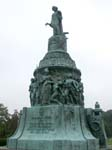
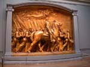

|
|
|
|
|
The Capital at dusk taken from the U. S. Grant
Memorial. |
Eleanor Roosevelt and more at the FDR Memorial
in Washington. |
Our next stop - the Lincoln Memorial. |
|
|
|

|
|
Abraham Lincoln at the Lincoln Memorial. |
Our next day was a free day, so I set out
on my own for Arlington National Cemetery. As it happened, others
in our group had the same idea - I ran into Profs. Waugh and
Gallagher there. |
Confederate Monument, marking a section for
burial of Confederate soldiers. |
|
|

|
|
|
The front portico of the Custis-Lee mansion,
Arlington house. |
The plaster model of the Robert Gould Shaw
and 54th Massachusetts memorial by Augustus Saint-Gaudens at
the National Gallery of Art. The monument itself is bronze and
can be found on Boston Commons. |
Here are Emily, Sarah, Michael and Kristen
taking in the town. (Photo by JW) |